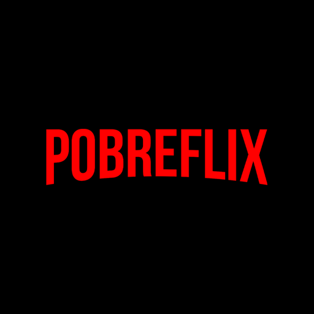
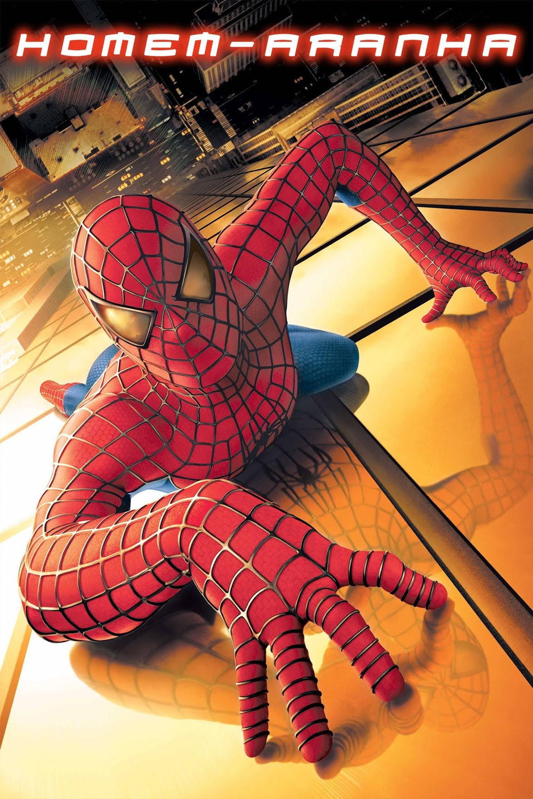
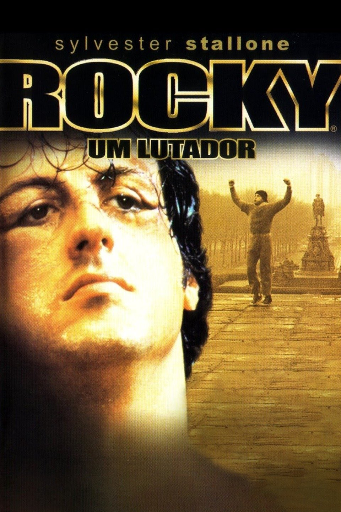

HOMEM ARANHA

| Duração |
Faixa Etária |
Gênero |
| 180 Min |
Livre |
Ação |
Depois de ser picado por uma aranha geneticamente modificada em uma demonstração científica, o jovem nerd Peter Parker ganha superpoderes. Inicialmente, ele pretende usá-los para para ganhar dinheiro, adotando o nome de Homem-Aranha e se apresentando em lutas de exibição. Porém, ao presenciar o assassinando de seu tio Ben e sentir-se culpado, Peter decide não mais usar seus poderes para proveito próprio e sim para enfrentar o mal, tendo como seu primeiro grande desafio o psicótico Duende Verde.
O PODEROSO CHEFÃO

| Duração |
Faixa Etária |
Gênero |
| 300 Min |
+16 |
Drama |
Uma família mafiosa luta para estabelecer sua supremacia nos Estados Unidos depois da Segunda Guerra Mundial. Uma tentativa de assassinato deixa o chefão Vito Corleone incapacitado e força os filhos Michael e Sonny a assumir os negócios..
ROCKY: UM LUTADOR

| Duração |
Faixa Etária |
Gênero |
| 210 Min |
+16 |
Drama |
- Rocky Balboa, um pequeno boxeador da classe trabalhadora da Filadélfia, é arbitrariamente escolhido para lutar contra o campeão dos pesos pesados, Apollo Creed, quando o adversário do invicto lutador agendado para a luta é ferido. Durante o treinamento com o mal-humorado Mickey Goldmill, Rocky timidamente começa um relacionamento com Adrian, a invisível irmã de Paulie, seu amigo empacotador de carne.
|
Alunos |
|
|
| Marcelo Calsing |
Gabriel Marquioli |
Yean |
Leon Maximos |